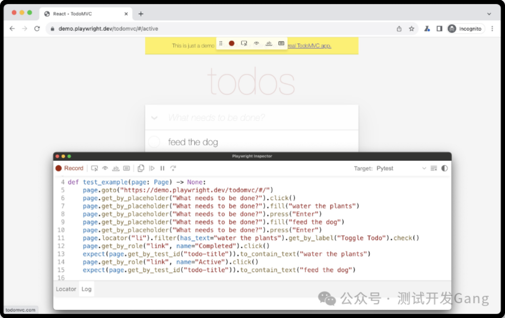
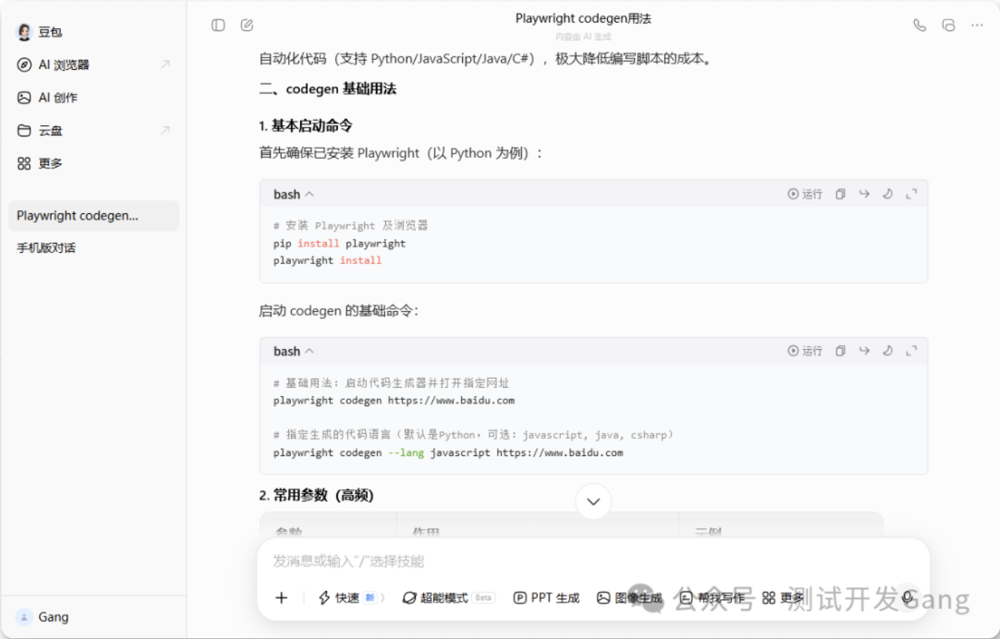

本书作者：测试开发刚哥，文章版权归个人所有，未经授权请勿转载。
UI 自动化最麻烦的就是定位元素，好在 Playwright 支持录制脚本，可以在界面进行操作，快速获取元素定位，生成测试脚本。
并且 Playwright 会优先选择稳定的元素定位方式，通常是 role, text 和 test id。
前置条件：
- 安装 node.js
- 执行 playwright install 安装测试版浏览器
安装完成后执行命令，启动 Codegen：
playwright codegen
也可以指定 URL 进行启动：
playwright codegen demo.playwright.dev/todomvc
启动后会打开 2 个窗口：

1 个是测试版浏览器，也就是进行操作的页面。1 个是监视器，会实时生成脚本，可以在右上角的 Target 切换不同语言，Python 就选择 Pytest。
更多用法请咨询 AI：

元素定位
提示词：
访问https://playwright.dev/python/docs/locators，提取最重要的10点
Playwright Locators 核心 10 点（官方文档核心提炼）
-
定位器核心特性：Locators 是 Playwright 自动等待和重试机制的核心，代表任意时刻查找页面元素的方式，每次执行操作都会重新定位最新的 DOM 元素，适配页面重渲染场景。
-
推荐定位器优先级：优先使用面向用户的内置定位器，而非 CSS/XPath，官方推荐顺序核心为：get_by_role() > get_by_test_id() > 文本 / 标签类定位器，避免依赖 DOM 结构的选择器导致用例不稳定。
-
核心内置定位器及适用场景
提供 7 种官方推荐定位器，各有明确适用场景：
- get_by_role()：按 W3C ARIA 角色 / 可访问名称定位（如按钮、复选框），最贴合用户操作视角；
- get_by_label()：定位带标签的表单控件（如输入框）；
- get_by_test_id()：按 data-testid 定位（最稳定，不受页面文本 / 样式变化影响）；
- 其余：get_by_text()（非交互元素文本）、get_by_placeholder()（无标签表单）、get_by_alt_text()（图片）、get_by_title()（带 title 属性元素）。
-
定位器可链式调用：所有创建定位器的方法（如 get_by_role()/get_by_label()）可在 Locator/FrameLocator 上调用，支持逐层缩小定位范围（如先定位 iframe，再定位内部按钮）。
-
强大的过滤能力：通过 locator.filter()实现精准筛选，支持 4 种过滤方式：按文本（has_text/has_not_text）、按子元素（has/has_not）、正则匹配文本，且可多过滤条件链式组合。
-
定位器运算符
支持 3 种复合定位逻辑，满足复杂场景：
- and_()：同时匹配多个定位器（如角色为按钮且含指定 title）；
- or_()：匹配任意一个定位器（如处理弹窗 / 目标元素二选一场景）；
- 嵌套定位：在父定位器内匹配子定位器（如对话框内的保存按钮）。
-
严格模式特性：Locators 默认开启严格模式，单个元素操作若匹配多个元素会抛出异常（如 click()）；多元素操作（如 count()）可正常执行，可通过 first/last/nth()显式取消严格校验（不推荐）。
-
原生支持 Shadow DOM：所有定位器默认穿透 Shadow DOM（XPath 除外），闭模式 Shadow DOM 不支持，可直接按普通元素方式定位 Shadow DOM 内的元素。
-
列表元素处理方案：针对列表提供全套操作，包括：断言列表数量（to_have_count）、断言列表文本（to_have_text）、精准获取指定项（文本 / Test ID / 过滤），避免直接使用 nth()（易因页面顺序变化失效）。
-
CSS/XPath 的使用规范：官方不推荐使用 CSS/XPath（易因 DOM 结构变化失效），仅在无其他方案时使用 page.locator()，且禁止使用超长嵌套的 CSS/XPath 选择器，替代方案为定义 Test ID 或使用角色定位。
题外话
这篇文章是我第一次使用 AI 生成文字，写文章的效率提升了很多。但是怎么提高文章质量？如何选择话题？哪些内容能对读者有帮助？是接下来需要重点思考和调整的。纯粹的知识搬运，受众只会越来越少。“能帮助读者拓展认知的好文章”，也许是我努力的方向。
参考资料
https://playwright.dev/python/docs/codegen